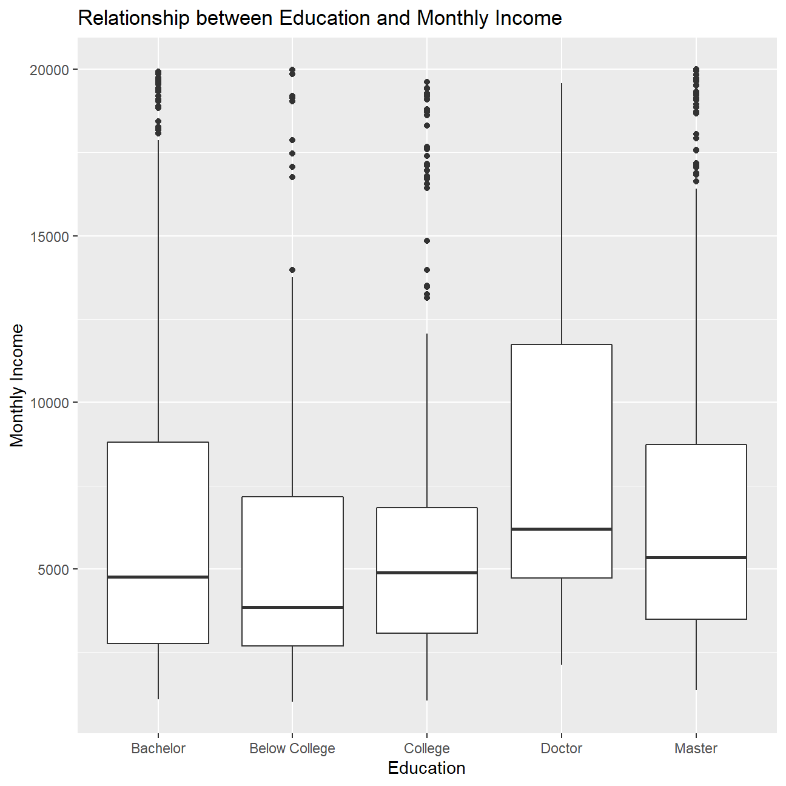
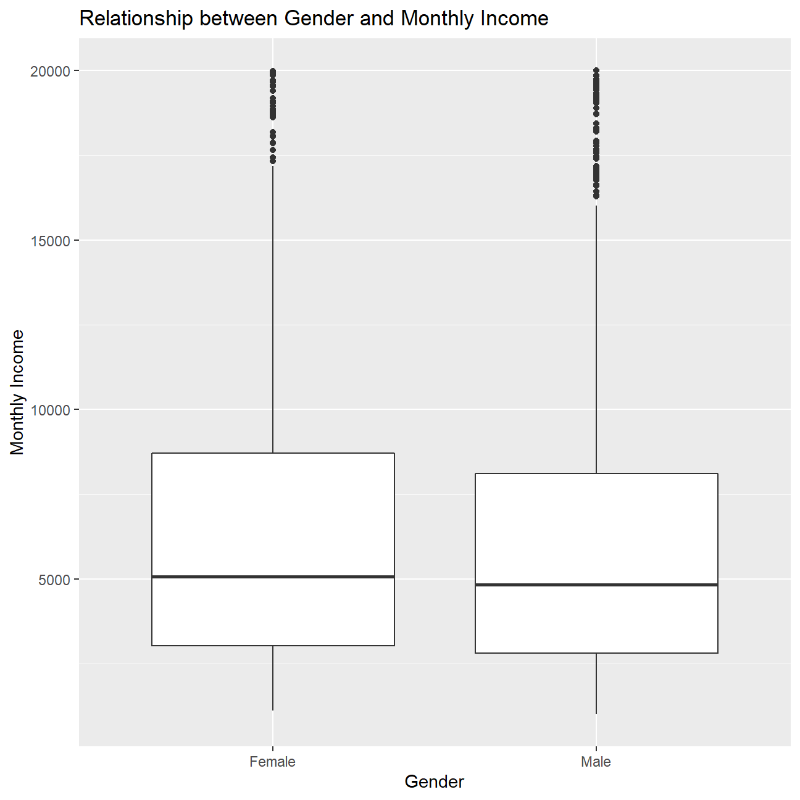
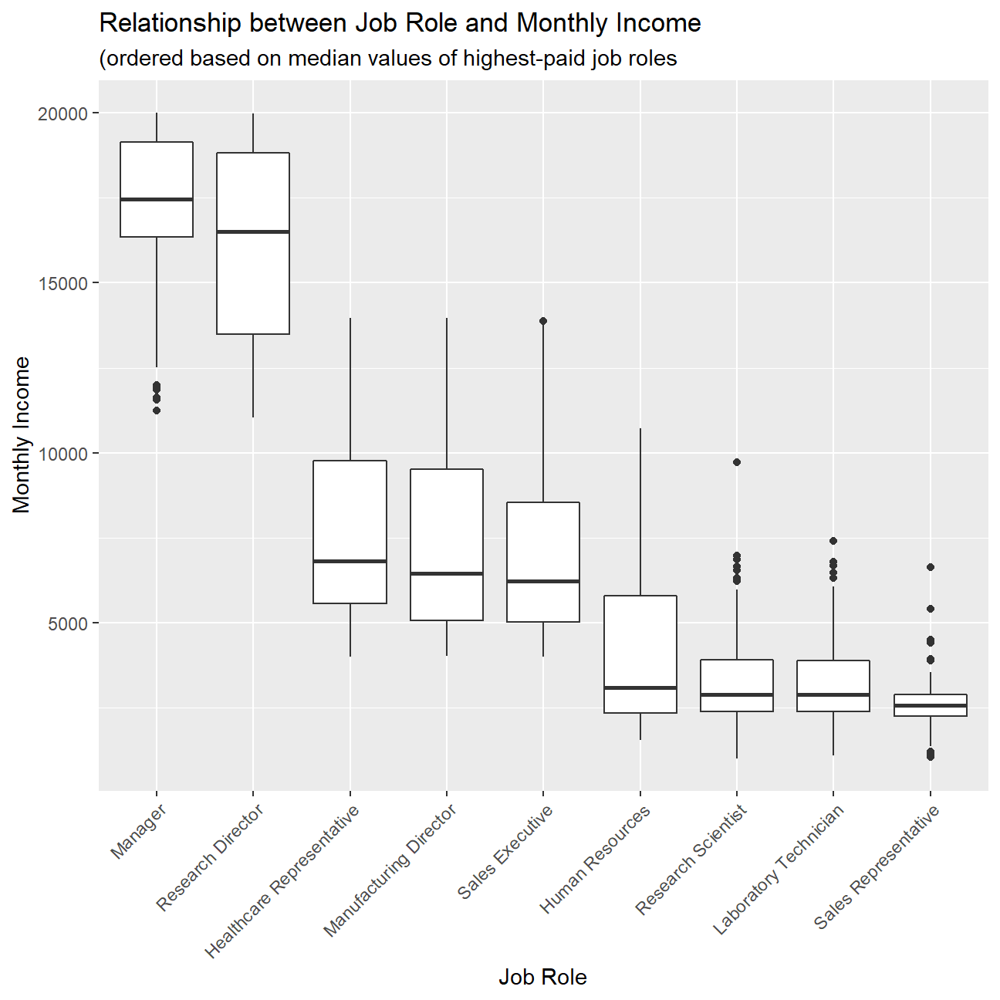

---
categories:
- ""
- ""
date: "2020-10-17"
description: Corporate
draft: false
image: promotion.jpg
keywords: ""
slug: Project3
title: "IBM HR data"
---


<div id="ibm-hr-analytics" class="section level1">
<h1>IBM HR Analytics</h1>
<p>Loading the data…</p>
<pre class="r"><code>hr_dataset &lt;- read_csv(here::here(&quot;data&quot;, &quot;datasets_1067_1925_WA_Fn-UseC_-HR-Employee-Attrition.csv&quot;))
glimpse(hr_dataset)</code></pre>
<pre><code>## Rows: 1,470
## Columns: 35
## $ Age                      &lt;dbl&gt; 41, 49, 37, 33, 27, 32, 59, 30, 38, 36, 35...
## $ Attrition                &lt;chr&gt; &quot;Yes&quot;, &quot;No&quot;, &quot;Yes&quot;, &quot;No&quot;, &quot;No&quot;, &quot;No&quot;, &quot;No&quot;...
## $ BusinessTravel           &lt;chr&gt; &quot;Travel_Rarely&quot;, &quot;Travel_Frequently&quot;, &quot;Tra...
## $ DailyRate                &lt;dbl&gt; 1102, 279, 1373, 1392, 591, 1005, 1324, 13...
## $ Department               &lt;chr&gt; &quot;Sales&quot;, &quot;Research &amp; Development&quot;, &quot;Resear...
## $ DistanceFromHome         &lt;dbl&gt; 1, 8, 2, 3, 2, 2, 3, 24, 23, 27, 16, 15, 2...
## $ Education                &lt;dbl&gt; 2, 1, 2, 4, 1, 2, 3, 1, 3, 3, 3, 2, 1, 2, ...
## $ EducationField           &lt;chr&gt; &quot;Life Sciences&quot;, &quot;Life Sciences&quot;, &quot;Other&quot;,...
## $ EmployeeCount            &lt;dbl&gt; 1, 1, 1, 1, 1, 1, 1, 1, 1, 1, 1, 1, 1, 1, ...
## $ EmployeeNumber           &lt;dbl&gt; 1, 2, 4, 5, 7, 8, 10, 11, 12, 13, 14, 15, ...
## $ EnvironmentSatisfaction  &lt;dbl&gt; 2, 3, 4, 4, 1, 4, 3, 4, 4, 3, 1, 4, 1, 2, ...
## $ Gender                   &lt;chr&gt; &quot;Female&quot;, &quot;Male&quot;, &quot;Male&quot;, &quot;Female&quot;, &quot;Male&quot;...
## $ HourlyRate               &lt;dbl&gt; 94, 61, 92, 56, 40, 79, 81, 67, 44, 94, 84...
## $ JobInvolvement           &lt;dbl&gt; 3, 2, 2, 3, 3, 3, 4, 3, 2, 3, 4, 2, 3, 3, ...
## $ JobLevel                 &lt;dbl&gt; 2, 2, 1, 1, 1, 1, 1, 1, 3, 2, 1, 2, 1, 1, ...
## $ JobRole                  &lt;chr&gt; &quot;Sales Executive&quot;, &quot;Research Scientist&quot;, &quot;...
## $ JobSatisfaction          &lt;dbl&gt; 4, 2, 3, 3, 2, 4, 1, 3, 3, 3, 2, 3, 3, 4, ...
## $ MaritalStatus            &lt;chr&gt; &quot;Single&quot;, &quot;Married&quot;, &quot;Single&quot;, &quot;Married&quot;, ...
## $ MonthlyIncome            &lt;dbl&gt; 5993, 5130, 2090, 2909, 3468, 3068, 2670, ...
## $ MonthlyRate              &lt;dbl&gt; 19479, 24907, 2396, 23159, 16632, 11864, 9...
## $ NumCompaniesWorked       &lt;dbl&gt; 8, 1, 6, 1, 9, 0, 4, 1, 0, 6, 0, 0, 1, 0, ...
## $ Over18                   &lt;chr&gt; &quot;Y&quot;, &quot;Y&quot;, &quot;Y&quot;, &quot;Y&quot;, &quot;Y&quot;, &quot;Y&quot;, &quot;Y&quot;, &quot;Y&quot;, &quot;Y...
## $ OverTime                 &lt;chr&gt; &quot;Yes&quot;, &quot;No&quot;, &quot;Yes&quot;, &quot;Yes&quot;, &quot;No&quot;, &quot;No&quot;, &quot;Ye...
## $ PercentSalaryHike        &lt;dbl&gt; 11, 23, 15, 11, 12, 13, 20, 22, 21, 13, 13...
## $ PerformanceRating        &lt;dbl&gt; 3, 4, 3, 3, 3, 3, 4, 4, 4, 3, 3, 3, 3, 3, ...
## $ RelationshipSatisfaction &lt;dbl&gt; 1, 4, 2, 3, 4, 3, 1, 2, 2, 2, 3, 4, 4, 3, ...
## $ StandardHours            &lt;dbl&gt; 80, 80, 80, 80, 80, 80, 80, 80, 80, 80, 80...
## $ StockOptionLevel         &lt;dbl&gt; 0, 1, 0, 0, 1, 0, 3, 1, 0, 2, 1, 0, 1, 1, ...
## $ TotalWorkingYears        &lt;dbl&gt; 8, 10, 7, 8, 6, 8, 12, 1, 10, 17, 6, 10, 5...
## $ TrainingTimesLastYear    &lt;dbl&gt; 0, 3, 3, 3, 3, 2, 3, 2, 2, 3, 5, 3, 1, 2, ...
## $ WorkLifeBalance          &lt;dbl&gt; 1, 3, 3, 3, 3, 2, 2, 3, 3, 2, 3, 3, 2, 3, ...
## $ YearsAtCompany           &lt;dbl&gt; 6, 10, 0, 8, 2, 7, 1, 1, 9, 7, 5, 9, 5, 2,...
## $ YearsInCurrentRole       &lt;dbl&gt; 4, 7, 0, 7, 2, 7, 0, 0, 7, 7, 4, 5, 2, 2, ...
## $ YearsSinceLastPromotion  &lt;dbl&gt; 0, 1, 0, 3, 2, 3, 0, 0, 1, 7, 0, 0, 4, 1, ...
## $ YearsWithCurrManager     &lt;dbl&gt; 5, 7, 0, 0, 2, 6, 0, 0, 8, 7, 3, 8, 3, 2, ...</code></pre>
<p>Cleaning the data…</p>
<pre class="r"><code>hr_cleaned &lt;- hr_dataset %&gt;% 
  clean_names() %&gt;% 
  mutate(
    education = case_when(
      education == 1 ~ &quot;Below College&quot;,
      education == 2 ~ &quot;College&quot;,
      education == 3 ~ &quot;Bachelor&quot;,
      education == 4 ~ &quot;Master&quot;,
      education == 5 ~ &quot;Doctor&quot;
    ),
    environment_satisfaction = case_when(
      environment_satisfaction == 1 ~ &quot;Low&quot;,
      environment_satisfaction == 2 ~ &quot;Medium&quot;,
      environment_satisfaction == 3 ~ &quot;High&quot;,
      environment_satisfaction == 4 ~ &quot;Very High&quot;
    ),
    job_satisfaction = case_when(
      job_satisfaction == 1 ~ &quot;Low&quot;,
      job_satisfaction == 2 ~ &quot;Medium&quot;,
      job_satisfaction == 3 ~ &quot;High&quot;,
      job_satisfaction == 4 ~ &quot;Very High&quot;
    ),
    performance_rating = case_when(
      performance_rating == 1 ~ &quot;Low&quot;,
      performance_rating == 2 ~ &quot;Good&quot;,
      performance_rating == 3 ~ &quot;Excellent&quot;,
      performance_rating == 4 ~ &quot;Outstanding&quot;
    ),
    work_life_balance = case_when(
      work_life_balance == 1 ~ &quot;Bad&quot;,
      work_life_balance == 2 ~ &quot;Good&quot;,
      work_life_balance == 3 ~ &quot;Better&quot;,
      work_life_balance == 4 ~ &quot;Best&quot;
    )
  ) %&gt;% 
  select(age, attrition, daily_rate, department,
         distance_from_home, education,
         gender, job_role,environment_satisfaction,
         job_satisfaction, marital_status,
         monthly_income, num_companies_worked, percent_salary_hike,
         performance_rating, total_working_years,
         work_life_balance, years_at_company,
         years_since_last_promotion)</code></pre>
<ol style="list-style-type: decimal">
<li>Attrition Rate of the company:</li>
</ol>
<pre class="r"><code>glimpse(hr_cleaned)</code></pre>
<pre><code>## Rows: 1,470
## Columns: 19
## $ age                        &lt;dbl&gt; 41, 49, 37, 33, 27, 32, 59, 30, 38, 36, ...
## $ attrition                  &lt;chr&gt; &quot;Yes&quot;, &quot;No&quot;, &quot;Yes&quot;, &quot;No&quot;, &quot;No&quot;, &quot;No&quot;, &quot;N...
## $ daily_rate                 &lt;dbl&gt; 1102, 279, 1373, 1392, 591, 1005, 1324, ...
## $ department                 &lt;chr&gt; &quot;Sales&quot;, &quot;Research &amp; Development&quot;, &quot;Rese...
## $ distance_from_home         &lt;dbl&gt; 1, 8, 2, 3, 2, 2, 3, 24, 23, 27, 16, 15,...
## $ education                  &lt;chr&gt; &quot;College&quot;, &quot;Below College&quot;, &quot;College&quot;, &quot;...
## $ gender                     &lt;chr&gt; &quot;Female&quot;, &quot;Male&quot;, &quot;Male&quot;, &quot;Female&quot;, &quot;Mal...
## $ job_role                   &lt;chr&gt; &quot;Sales Executive&quot;, &quot;Research Scientist&quot;,...
## $ environment_satisfaction   &lt;chr&gt; &quot;Medium&quot;, &quot;High&quot;, &quot;Very High&quot;, &quot;Very Hig...
## $ job_satisfaction           &lt;chr&gt; &quot;Very High&quot;, &quot;Medium&quot;, &quot;High&quot;, &quot;High&quot;, &quot;...
## $ marital_status             &lt;chr&gt; &quot;Single&quot;, &quot;Married&quot;, &quot;Single&quot;, &quot;Married&quot;...
## $ monthly_income             &lt;dbl&gt; 5993, 5130, 2090, 2909, 3468, 3068, 2670...
## $ num_companies_worked       &lt;dbl&gt; 8, 1, 6, 1, 9, 0, 4, 1, 0, 6, 0, 0, 1, 0...
## $ percent_salary_hike        &lt;dbl&gt; 11, 23, 15, 11, 12, 13, 20, 22, 21, 13, ...
## $ performance_rating         &lt;chr&gt; &quot;Excellent&quot;, &quot;Outstanding&quot;, &quot;Excellent&quot;,...
## $ total_working_years        &lt;dbl&gt; 8, 10, 7, 8, 6, 8, 12, 1, 10, 17, 6, 10,...
## $ work_life_balance          &lt;chr&gt; &quot;Bad&quot;, &quot;Better&quot;, &quot;Better&quot;, &quot;Better&quot;, &quot;Be...
## $ years_at_company           &lt;dbl&gt; 6, 10, 0, 8, 2, 7, 1, 1, 9, 7, 5, 9, 5, ...
## $ years_since_last_promotion &lt;dbl&gt; 0, 1, 0, 3, 2, 3, 0, 0, 1, 7, 0, 0, 4, 1...</code></pre>
<pre class="r"><code>employees_left &lt;- sum(hr_cleaned$attrition == &quot;Yes&quot;)

total_employees &lt;- count(hr_cleaned)

attrition_rate &lt;-  employees_left / total_employees * 100.0
knitr::kable(attrition_rate, col.names=c(&quot;Attrition rate&quot;))</code></pre>
<table>
<thead>
<tr class="header">
<th align="right">Attrition rate</th>
</tr>
</thead>
<tbody>
<tr class="odd">
<td align="right">16.1</td>
</tr>
</tbody>
</table>
<ol start="2" style="list-style-type: decimal">
<li>Distribution of various variables:</li>
</ol>
<p>The age variable seems the closest to normal, with a mean and median value very close to each other.</p>
<pre class="r"><code>cols &lt;- c(&#39;age&#39;, &#39;years_at_company&#39;, &#39;monthly_income&#39;, &#39;years_since_last_promotion&#39;)
statistics &lt;- c(&#39;min&#39;, &#39;max&#39;, &#39;mean&#39;, &#39;median&#39;, &#39;sd&#39;)
subset_data &lt;- hr_cleaned[, cols]

summary_vals &lt;- subset_data %&gt;% summarise_each(funs(min))
summary_vals &lt;- append(summary_vals, subset_data %&gt;% summarise_each(funs(max)))
summary_vals &lt;- append(summary_vals, subset_data %&gt;% summarise_each(funs(mean)))
summary_vals &lt;- append(summary_vals, subset_data %&gt;% summarise_each(funs(median)))
summary_vals &lt;- append(summary_vals, subset_data %&gt;% summarise_each(funs(sd)))

summary_matrix &lt;- matrix(summary_vals, nrow = 5, dimnames = list(statistics, cols), byrow = TRUE) 
  
knitr::kable(summary_matrix, digits=0, caption=&quot;Summary statistics of key variables&quot;, align=&quot;rrrr&quot;, col.names=c(&quot;Age&quot;,&quot;Years at company&quot;,&quot;Monthly income&quot;,&quot;Years since last promotion&quot;))</code></pre>
<table>
<caption>(#tab:distribution_of_vars)Summary statistics of key variables</caption>
<thead>
<tr class="header">
<th align="left"></th>
<th align="right">Age</th>
<th align="right">Years at company</th>
<th align="right">Monthly income</th>
<th align="right">Years since last promotion</th>
</tr>
</thead>
<tbody>
<tr class="odd">
<td align="left">min</td>
<td align="right">18</td>
<td align="right">0</td>
<td align="right">1009</td>
<td align="right">0</td>
</tr>
<tr class="even">
<td align="left">max</td>
<td align="right">60</td>
<td align="right">40</td>
<td align="right">19999</td>
<td align="right">15</td>
</tr>
<tr class="odd">
<td align="left">mean</td>
<td align="right">36.9238095238095</td>
<td align="right">7.00816326530612</td>
<td align="right">6502.93129251701</td>
<td align="right">2.18775510204082</td>
</tr>
<tr class="even">
<td align="left">median</td>
<td align="right">36</td>
<td align="right">5</td>
<td align="right">4919</td>
<td align="right">1</td>
</tr>
<tr class="odd">
<td align="left">sd</td>
<td align="right">9.13537348913673</td>
<td align="right">6.12652515240357</td>
<td align="right">4707.95678309799</td>
<td align="right">3.22243027913797</td>
</tr>
</tbody>
</table>
<ol start="3" style="list-style-type: decimal">
<li>Monthly income and education</li>
</ol>
<pre class="r"><code>income_vs_education &lt;- hr_cleaned %&gt;% group_by(education) %&gt;%
  summarise(min_income = min(monthly_income),
            max_income = max(monthly_income),
            mean_income = mean(monthly_income),
            median_income = median(monthly_income))

income_vs_education</code></pre>
<pre><code>## # A tibble: 5 x 5
##   education     min_income max_income mean_income median_income
##   &lt;chr&gt;              &lt;dbl&gt;      &lt;dbl&gt;       &lt;dbl&gt;         &lt;dbl&gt;
## 1 Bachelor            1081      19926       6517.         4762 
## 2 Below College       1009      19973       5641.         3849 
## 3 College             1051      19613       6227.         4892.
## 4 Doctor              2127      19586       8278.         6203 
## 5 Master              1359      19999       6832.         5342.</code></pre>
<pre class="r"><code>ggplot(hr_cleaned, aes(x=education, y=monthly_income)) +
  geom_boxplot() +
  labs(title = &quot;Relationship between Education and Monthly Income&quot;,
       x = &quot;Education&quot;,
       y = &quot;Monthly Income&quot;) + 
  NULL</code></pre>
<p></p>
<ol start="4" style="list-style-type: decimal">
<li>Monthly income and gender</li>
</ol>
<pre class="r"><code>ggplot(hr_cleaned, aes(x=gender, y=monthly_income)) +
  geom_boxplot() +
  labs(title = &quot;Relationship between Gender and Monthly Income&quot;,
       x = &quot;Gender&quot;,
       y = &quot;Monthly Income&quot;) + 
  NULL</code></pre>
<p>
There seems to be a slight relationship between education and monthly income as the higher the education level, the higher monthly income tends to be. However, the dataset does not seem to show any substantial relationship between gender and monthly income, with both male and female showing similar monthly income distribution.</p>
<ol start="5" style="list-style-type: decimal">
<li>Boxplot of income vs job role:</li>
</ol>
<pre class="r"><code>new_order &lt;- with(hr_cleaned, reorder(job_role, -monthly_income, median , na.rm=T))

ggplot(hr_cleaned, aes(x=new_order, y=monthly_income)) +
  geom_boxplot() +
  labs(title = &quot;Relationship between Job Role and Monthly Income&quot;,
       subtitle = &quot;(ordered based on median values of highest-paid job roles&quot;,
       x = &quot;Job Role&quot;,
       y = &quot;Monthly Income&quot;) + 
  theme(axis.text.x = element_text(angle = 45 , vjust = 1, hjust=1)) + 
  NULL</code></pre>
<p></p>
<ol start="6" style="list-style-type: decimal">
<li>Regression analysis</li>
</ol>
<pre class="r"><code>model1 &lt;- lm(monthly_income ~ job_role + education, data=hr_cleaned)
model1 %&gt;% broom::tidy()</code></pre>
<pre><code>## # A tibble: 13 x 5
##    term                           estimate std.error statistic   p.value
##    &lt;chr&gt;                             &lt;dbl&gt;     &lt;dbl&gt;     &lt;dbl&gt;     &lt;dbl&gt;
##  1 (Intercept)                      7635.       190.    40.2   1.52e-238
##  2 job_roleHuman Resources         -3283.       332.    -9.88  2.51e- 22
##  3 job_roleLaboratory Technician   -4275.       217.   -19.7   1.53e- 76
##  4 job_roleManager                  9653.       267.    36.1   2.38e-204
##  5 job_roleManufacturing Director   -219.       244.    -0.898 3.69e-  1
##  6 job_roleResearch Director        8499.       288.    29.5   1.33e-150
##  7 job_roleResearch Scientist      -4291.       213.   -20.2   7.50e- 80
##  8 job_roleSales Executive          -600.       209.    -2.86  4.24e-  3
##  9 job_roleSales Representative    -4875.       285.   -17.1   6.53e- 60
## 10 educationBelow College           -256.       177.    -1.44  1.49e-  1
## 11 educationCollege                 -321.       147.    -2.18  2.97e-  2
## 12 educationDoctor                   -63.4      305.    -0.207 8.36e-  1
## 13 educationMaster                   -70.3      132.    -0.530 5.96e-  1</code></pre>
<p>A brief multivariate regression analysis shows that overall the job role is a significant predictor of the level of monthly income one is going to have, which is in line with the expectation. However, only the ‘college’ education variable seems to significantly correlate with the income as its p-value&lt;0.05. We can conclude that most income levels will be related to the job role more than the job type in this population sample.</p>
</div>
